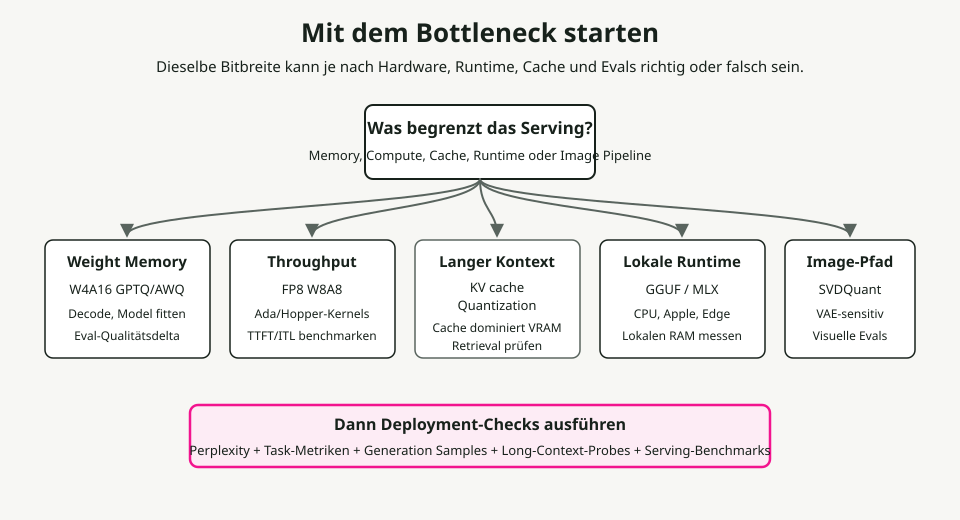
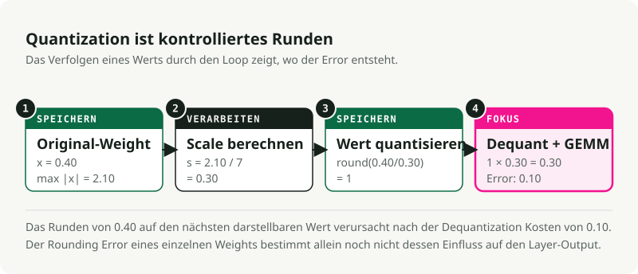
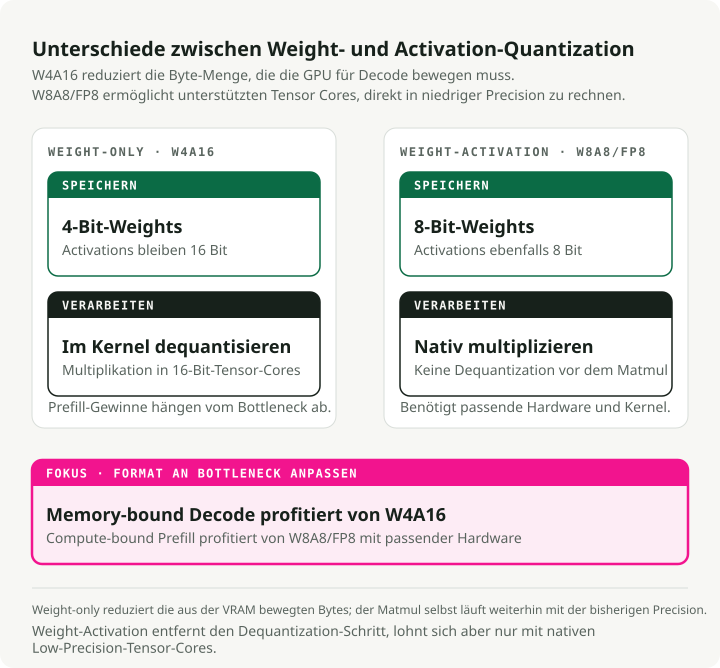
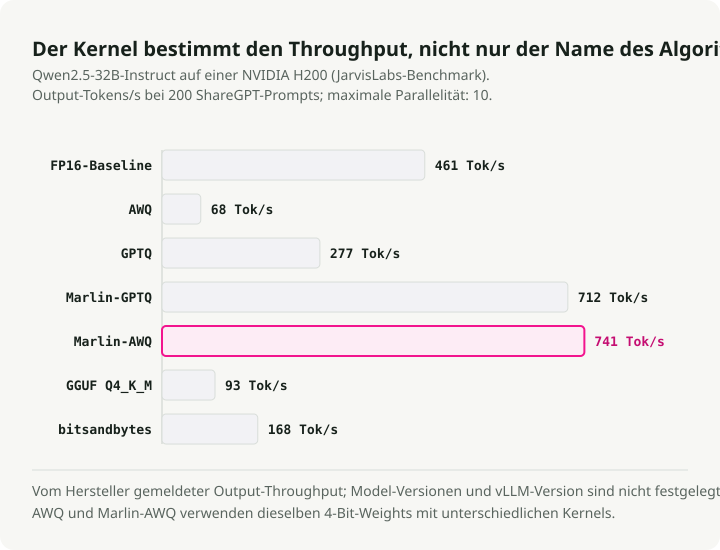
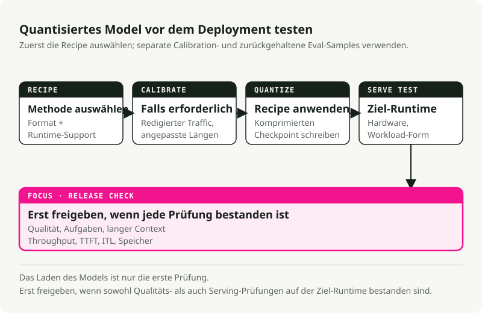

Automatische Übersetzung
Dieser Artikel wurde automatisch aus der englischen Originalversion übersetzt.
Modellquantisierung im Jahr 2026: Von den Grundlagen bis zur Produktivnutzung
Quantisierung ist selten ein einfacher Knopfdruck, um weniger Bits zu verwenden und Speicher zu sparen; selbst die grundlegende Definition hängt davon ab, ob man komprimiert Gewichte, Aktivierungen oder beidesIn Produktivumgebungen für Dienste erfordert die Quantisierung ein Gleichgewicht zwischen Gewichts-Speicher, Aktivierungs-Berechnung, Größe des KV-Caches, Laufzeit-Kerne, Hardware-Unterstützung, Kalibrierungsdaten sowie Qualität. Ein 4-Bit-Modell passt zwar in die VRAM, läuft aber langsam, wenn der Kernel schlecht optimiert ist, da der JarvisLabs vLLM-Benchmark zeigt an, wann sich der Algorithmus und der Kernel unterscheiden. FP8 ist auf NVIDIA Hopper-GPUs hervorragend geeignet, sofern die Laufzeitumgebung und die Hardware dies unterstützen, doch es ist nutzlos auf Hardware ohne native FP8-Tensor-Core-Support-Mechanismen; bei TensorRT-LLM’s Matrix zur Hardwareunterstützung macht diese Abhängigkeit explizit. KV-Cache-Quantisierung Kann bei der Verarbeitung langer Kontexte und hoher Konkurrenzbedingungen wichtiger sein als die Gewichtskwantisierung; dadurch ändert sich das numerische Format, das zur Speicherung und Lese der im Cache gespeicherten Schlüssel-/Wert-Tensoren verwendet wird.
Zusammenfassung: Wählen Sie zuerst das Engpassproblem, bevor Sie die Bitbreite festlegen. Verwenden Sie AWQ oder GPTQ Wenn die Gewichte nicht in die VRAM passen. Verwenden Sie FP8 W8A8 bei der Ausführung von Hochdurchsatz-Arbeitlasten auf GPUs mit FP8-Unterstützung. Testen Sie KV-Cache-Quantisierung Wenn langer Kontext oder hohe Konkurrenz den Arbeitsspeicher aufbrauchen. Verwenden Sie GGUF-Dateien mit Tensor-Kodierungen von llama.cpp wie z. B. Q4_K_M, Q5_K_M oder Q8_0 für lokale CPU, Apple Silicon sowie Desktop-Inferenz. Behalten Sie NF4Hauptsächlich für das Feintunen im QLoRA-Stil, nicht als Standard-Format für die Produktivumgebung.**

1. Beginnen Sie mit dem Engpass
Die relevante Frage lautet nicht „Wie viele Bits kann ich entfernen?“, sondern „Was beschränkt gerade diese Arbeitslast?“
Häufige Engpässe und ihre Ausgangspunkte:
| Wenn dies das Problem ist | Beginnen Sie hier. | Typische Werkzeuge | Überprüfen vor dem Bereitstellen |
|---|---|---|---|
| Die Modellgewichte passen nicht in den VRAM. | Quantisierung ausschließlich nach dem Gewichtsprinzip für W4A16 | AWQ oder GPTQ mit llm-compressor oder GPTQModel |
Perplexität, Programmierung, logisches Denken, Befehlsbefolgung |
| Der Hochdurchsatz-Service ist durch Rechenleistungsbeschränkungen eingeschränkt. | FP8 oder INT8 W8A8 | FP8 PTQ SmoothQuant, TensorRT-LLM, vLLM | Durchsatz, TTFT, Aufgabengenauigkeit |
| Langer Kontext oder hohe Konkurrenz belasten die GPU stark. | KV-Cache-Quantisierung | vLLM, TensorRT-LLM, oder Transformers-Quantisierungs-Cache | Lange-Kontext-Aufrufung, Latenz, Sicherheit und Qualität |
| Lokale Inferenz auf CPU, Apple Silicon oder Desktop-Systemen | GGUF-Dateien mit lokalen Tensor-Kodierungen | llama.cpp, Ollama, LM Studio |
Prompt-Latenz, RAM-Auslastung, ausgewählte Tensor-Kodierung sowie subjektive Ausgabequalität |
| Die Feinabstimmung des Adapters muss auf einer einzigen GPU durchgeführt werden. | NF4 / QLoRA | bitsandbytes, peft |
Verlustfunktion beim Feintunen und Qualität des verschmolzenen Modells |
| Der Pipeline für die Bildgenerierung ist zu groß oder zu langsam. | Diffusions-spezifische INT4 oder FP8 | SVDQuant, Nunchaku, torchao, NVIDIA ModelOpt |
Visuelle Artefakte, Prompt-Alignierung, Latenz, VRAM |
Verwenden Sie diese Tabelle als Karte. Die folgenden Abschnitte erläutern, warum sich diese Ausgangspunkte unterscheiden.
Einige Begriffe vor der Mathematik
- W{x}A{y} gibt an, wie präzise die für Gewichts- und Aktivierungsberechnungen unterstützten Operationen sind – in der Regel die GEMM-Pfade in den Serving-Engines. W4A16 speichert die Gewichte im 4-Bit-Format und behält die Aktivierungen in 16-Bit-Präzision bei. W8A8 verwendet 8-Bit-Gewichte sowie Aktivierungen in den unterstützten Rechungspfaden, definiert jedoch nicht automatisch den Datentyp für die persistente Speicherung jedes Laufzeit-Tensors.
- FP8, INT8, INT4, NF4 sind Zahlformate. Sie bestimmen, welche Werte dargestellt werden können.
- GPTQ, AWQ, SmoothQuant, QuaRot sind Algorithmen. Sie bestimmen, wie ein trainiertes Modell in ein Format mit geringerer Präzision umgewandelt werden soll.
- GGUF ist ein Dateiformat und kein Quantisierungsalgorithmus. Es speichert Tensor sowie Metadaten für GGML.
llama.cpp-Runtime-Modelle im -Style. Eine GGUF-Datei kann unquantisierte Tensor-Typen wieF16,BF16, oderF32, oder quantisierte Tensor-Kodierungen sowie Vorlagen wieQ4_K_M,Q5_K_M,Q8_0,IQ*,TQ*, oderMXFP4. Lesen Sie es nicht.GGUFals CUDA-ähnliches FP8 W8A8-Server-Rezept. - KV-Cache ist der Attention-Cache, der während der Generierung verwendet wird. Er speichert vorherige Schlüssel und Werte, damit das Modell bei jedem Token nicht den gesamten Dialog neu berechnen muss.
- KV-Cache-Quantisierung speichert gecachte Schlüssel/Wert-Aktivierungstensoren in einem Cache-Format mit niedrigerer Präzision wie FP8, INT8, INT4 oder INT2, abhängig von der laufzeitbasierten Unterstützung. Dies unterscheidet sich von Präfix-Caching, PagedAttention, oder die Abwicklung, welche entscheiden, ob Cache-Einträge wiederverwendet werden, wie sie allokiert sind oder wo sie gespeichert sind.
- GEMM steht für allgemeine Matrixmultiplikation. Der größte Teil der Inferenzzeit bei Transformern wird mit der Ausführung von Matrixmultiplikationen verbracht.
2. Quantisierung ist kontrollierte Rundung
Quantisierung wandelt Werte hoher Präzision in eine kleinere Menge darstellbarer Werte um, was die grundlegende Definition ist, die von beiden verwendet wird Hugging Face Optimum und TensorRT-LLM. Dadurch werden Speicher und Bandbreite eingespart. Gleichzeitig entstehen Rundungsfehler.
Die Quantisierung von BF16 auf INT4 reduziert die verfügbaren Werte auf lediglich 16 diskrete Intervalle, weshalb in Arbeiten zu niedrigbitigen Architekturen wie GPTQ, AWQ, und SVDQuant verwenden Sie nicht zu viel Aufwand für Ausreißer und Rekonstruktionsfehler. Wenn diese Kategorien die Gewichtsverteilung des Modells präzise erfassen, sparen Sie Speicher ohne Funktionalitäten zu verlieren. Wenn das Quantisierungsnetz ein wichtiges Ausreißerkanal zerstört, verliert das Modell seine Fähigkeit zum logischen Denken, zur Befolgung von Anweisungen oder zur visuellen Genauigkeit.
Symmetrische und asymmetrische Abbildung
Entsprechend der in gängigen Ansätzen verwendeten affinen Abbildung Quantisierungsleitfäden, die Quantisierung wandelt einen kontinuierlichen Fließkommawert \(x \in [\beta, \alpha]\) in ein diskretes Gitter um.
- \(x\) ist der ursprüngliche Wert mit hoher Präzision.
- \(x_q\) ist der quantisierte Wert.
- \(s\) ist die Skaleneinheit bzw. Schrittgroße.
- \(z\) ist der Nullpunkt, die ganze Zahl, die diesen Wert repräsentiert.
0.0. - \([q_{\min}, q_{\max}]\) ist der Zielintervall für Ganzzahlen. Gezeichnete 4-Bit-Werte verwenden häufig das Intervall \([-7, 7]\).
Symmetrische Quantisierung zentriert das Gitter um Null und setzt \(z = 0\):
Dies ist hardwarefreundlich, da bei der Laufzeitberechnung kein Abzug eines Nullpunkt-Offsets erforderlich ist; PyTorchs Quantisierungsstack stellt diese affinen Skalierungen sowie die Nullpunkt-Einstellungen als primitive Quantisierungsparameter bereit. torchaoAsymmetrische Quantisierung verschiebt das Gitter, um verzerrte Wertebereiche abzudecken:
Durch diese Verschiebung der Gitterstruktur können rein positive Aktivierungen besser erhalten werden, doch die Offset-Berechnung verursacht zusätzliche Rechenlast, es sei denn, der Kernel handhabt dies effizient.

Die Granularität der Skalierung ist entscheidend
Der Skalierungsfaktor kann einen gesamten Gewichtstensor, einen Kanal oder eine kleine Gruppe von Werten abdecken; vLLM’s Dokumentation zur FP8-KV-Cache Verwenden Sie weiterhin die gleiche Unterscheidung zwischen Skalierungsstrategien pro Tensor und pro Attention-Head. Kleinere Gruppen bewahren in der Regel die Qualität besser, erfordern aber den Speicher von mehr Metadaten zur Skalierung.
- Skalierung pro Tensor: Dabei wird ein einziger Skalierungsfaktor für die gesamte Gewichtsmatrix verwendet. Dies ist rechenintensiv einfach, doch bereits ein einzelner Ausreißerwert in der Matrix kann das Ganzzahlsystem verzerren und somit die Genauigkeit aller anderen Gewichte in dieser Schicht beeinträchtigen.
- Skalierung pro Kanal: Hierbei wird jedem Zeilenblock (Ausgabekanal) der Gewichtsmatrix ein eigener Skalierungsfaktor zugewiesen. Da verschiedene Ausgangsnervenzellen unterschiedliche numerische Bereiche aufweisen, verhindert die individuelle Skalierung der Kanäle, dass schmale Bereiche aufgrund der Notwendigkeit, breitere Kanäle unterzubringen, an Genauigkeit verlieren. Dies ist die Standard-Einstellung für viele 8-Bit-Gewichtskwantisierung Pfade.
- Gruppenspezifische (blökbasierte) Skalierung: Jede Zeile der Gewichtsmatrix wird in kleinere, sequenzielle Blöcke aufgeteilt – in der Regel 64 oder 128 Elemente – und jedem Block wird ein Skalierungsfaktor zugewiesen. Dies stellt den optimalen Ansatz für 4-Bit-Gewichtsformate dar, da dadurch extrem abweichende Gewichte auf eine sehr kleine lokale Gruppe beschränkt werden (zum Beispiel wie in den AutoGPTQ-Dokumentationen beschrieben).
group_size=128in seinem Beispiele für GPTQ), wobei die Genauigkeit im gesamten Rest der Gewichte des Layers erhalten bleibt.
Gewichte sind statisch, sodass ihre Skalen bereits vor dem Laden des Modells offline berechnet werden können. Aktivierungen ändern sich mit jedem Token, was bedeutet, dass ihre Wertebereiche unvorhersehbar sind. Dies führt zu zwei möglichen Ansätzen für die Verarbeitung von Aktivierungen:
- Skalierung der statischen AktivierungDynamische Skalierung der Aktivierung berechnet die Skala für die Aktivierungen dynamisch während des Forward-Passes, wobei die tatsächlichen Token-Werte genau in diesem Moment berücksichtigt werden. Es bewältigt Abweichungen im Prompt hervorragend und erfasst unerwartete Aktivierungsspitzen, doch die Berechnung von Minimum und Maximum des Aktivierungstensors in jeder Schicht verursacht Laufzeitkosten und erfordert spezialisierte, optimierte Kernel, um eine schnelle Ausführung zu gewährleisten.
Der KV-Cache liegt zwischen diesen Fällen. Schlüssel und Werte sind Laufzeit-Aktivierungstensoren: Jede Schicht berechnet sie aus den versteckten Zuständen während des Vorwärtslaufs. Sobald sie jedoch erzeugt wurden, sind sie keine vorübergehenden MatMul-Zwischenwerte mehr, sondern werden zu dauerhaften Bereitstellungszieständen, die von der Attention für spätere Token verwendet werden. Ein Bereitstellungsmotor kann diesen Zustand in geringerer Präzision speichern und gleichzeitig Skalendatenmetadaten dazu aufbewahren, wie in Abbildung gezeigt. vLLM’s quantisierter KV-Cache, FP8-KV-Cache von TensorRT-LLM, und Transformers-Quantisierungs-Cache. Diese Wahl des Cache-Speichers ist unabhängig von der Aktivierungspräzision, die innerhalb der linearen Kerne verwendet wird – weshalb „KV-Cache-Quantisierung“ zwar ein gültiger Begriff ist, aber nicht als Synonym für jede Art von KV-Cache-Optimierung herangezogen werden sollte.
PTQ und QAT finden in unterschiedlichen Phasen statt
Post-Training-Quantisierung, oder PTQ komprimiert ein trainiertes Modell im Nachhinein. Quantisierungsbewusstes Training, oder QAT, setzt das Modell während des Trainings dem Quantisierungsrauschen aus, damit es sich anpassen kann.**
| Methode | Wenn Intervalle erlernt werden | Verwenden Sie es, wenn | Kosten, die Sie zahlen müssen |
|---|---|---|---|
| PTQ ausschließlich nach Gewicht | Offline, für statische Gewichte | Das Modell passt nicht oder die Dekodierung ist durch Bandbreitenbeschränkungen eingeschränkt. | Die Aktivierungen laufen weiterhin im 16-Bit-Modus. |
| Statisches PTQ | Im Offline-Modus, aus den Kalibrierungsaufforderungen | Sie möchten eine schnelle Bereitstellung von W8A8. | Die Kalibrierungsdaten müssen mit den Produktionsdaten übereinstimmen. |
| Dynamischer PTQ | Laufzeit pro Batch oder Aktivierungspfad | Die Eingabedistributionen weisen erhebliche Unterschiede auf. | Zusätzliche Laufzeitbelastung sowie eingeschränkte Hardwareunterstützung |
| QAT | Während des Trainings | PTQ beeinträchtigt die Qualität eines empfindlichen Modells. | Vollständige Trainingsinfrastruktur sowie zusätzliche Rechenressourcen |
Die Kalibrierungsdaten müssen dem Traffic entsprechen, den Sie verarbeiten werden; der Kalibrierungspfad für den KV-Cache von vLLM verwendet beispielsweise ein sorgfältig ausgewähltes Datensatzensemble. llm-compressor. Wenn die Produktionsanfragen lange RAG-Spuren aufweisen, führen kurze Wikipedia-Absätze zwar zu ordentlichen Benchmark-Werten, doch zur Fehlfunktion der Deployment-Lösung. Das Modell passt seine Aktivierungsskalen an kurze Texte an und stößt anschließend bei echten Anfragen mit langem Kontext auf unterschiedliche Aktivierungsmustern – ein Risiko, das ebenfalls in Bewertungen der Quantisierung im Langkontext-Modus.
3. Zahlformate bestimmen die Hardwareanforderungen
Das Zahlformat legt fest, welche Werte das Modell im Speicher darstellen kann, doch die Speicherung eines Formats bedeutet nicht automatisch, dass Ihre GPU damit effizient rechnen kann. Eine schnelle Ausführung erfordert Laufzeitkerne sowie Hardwareunterstützung für die spezifische Bitbreite und das jeweilige Format; die TensorRT-LLM-Dokumentation beschreibt beide Aspekte. Rezeptliste und Matrize der Hardwareunterstützung.
| Formatierung | Speicherplatz pro Wert | Gute Standardeinstellung für | HauptWachpunkt |
|---|---|---|---|
| BF16 / FP16 | 2 Bytes | Baseline-Inferenz sowie trainingskompatible Bereitstellung | Hoher VRAM-Verbrauch sowie hoher Speicherbandbreitenverkehr |
| FP8 | 1 Byte | Hochleistungs-W8A8-Dienste auf Ada, Hopper und Blackwell | Erfordert native FP8-Tensor-Kerne sowie Laufzeitunterstützung |
| INT8 | 1 Byte | W8A8 unter Verwendung auf älterer oder nicht-NVIDIA-Hardware | Aktivierungs-Ausreißer und Empfindlichkeit der statischen Kalibrierung |
| INT4 | 0,5 Bytes | W4A16 – wenn das Gewichts-Speicherlimit die Hauptbeschränkung darstellt | Qualitätsverlust bei kleineren oder auf komplexe Reasoning-Fähigkeiten ausgerichteten Modellen |
| FP4 / NVFP4 | ~0,5 Bytes | Experimente aus der Blackwell-Ära und frühe Bereitstellungswege | Hardware-spezifische Anforderungen an Compiler und Laufzeitumgebung |
| llama.cpp GGUF-Kodierungen / Voreinstellungen | Variable | Lokale CPU, Apple Silicon, Desktop- sowie Edge-Inferenz | GGUF ist der Container; die Tensor-Kodierung stellt die Wahl der Quantisierung dar. |
| NF4 | 0,5 Bytes | QLoRA-Adapter-Training | Üblicherweise wird beim Produktivbetrieb das falsche Exportformat verwendet. |
BF16 und FP16 verwenden beide 16 Bit, verteilen die Präzision jedoch unterschiedlich, was zu verschiedenen Ausfallmustern führt. BF16 behält den 8-Bit-Exponentenbereich von FP32 bei und ist daher weniger anfällig für Überlauf. FP16 verfügt über mehr Mantissabits, weist aber einen schmaleren Exponentenbereich auf; daher erfordern Aktivierungsspitzen besondere Vorsicht. Die Bewertung von Kurtic et al. verwendet ausdrücklich BF16 als Baseline bei dem Vergleich der Bereitstellungsformate FP8, INT8 und INT4.
FP8 weist zwei gängige Varianten auf. E4M3 bietet höhere Präzision und wird in der Regel für Vorwärtsgewichte sowie Aktivierungen verwendet. E5M2 verfügt über einen größeren Dynamikumfang und eignet sich besser für Gradienten oder instabile Aktivierungspfade; vLLM stellt beide Varianten bereit. FP8 E4M3- und E5M2-KV-Cache-Datentypen. In der ACL 2025-Studie von Kurtic et al., „Give Me BF16 or Give Me Death“, FP8 W8A8 war im Wesentlichen verlustfrei. In der Llama-3.1-Familie wurden mehr als 500.000 Bewertungen durchgeführt. Das bedeutet jedoch nicht, dass jede Implementierung im FP8-Format automatisch funktioniert. Es zeigt vielmehr, wie robust dieses Format ist, sofern die Servicestack-Struktur es korrekt nutzt.
Blackwell fügt Mikroskalierungsformate wie MXFP8 und NVFP4 hinzu. Anstelle eines einzigen Skalierungsfaktors für einen gesamten Tensor oder eine Zeile verwendet das Mikroskalieren kleine Blöcke. NVIDIAs Erklärung zu NVFP4 beschreibt 4-Bit-Floating-Point-Werte in Blöcken zu je 16 Elementen, wobei FP8-Skalierungsfaktoren sowie eine übergeordnete FP32-Skalierung verwendet werden. Dieser Ansatz zielt darauf ab, ein Verhalten ähnlich wie bei INT4 bei gleichzeitigem Einsatz von Fließkommazahlen zu bieten. Allerdings erfordert er eine entsprechende Hardwarearchitektur, einen Compiler sowie Laufzeitunterstützung – aus diesem Grund listet TensorRT-LLM ... FP4- und FP8-Unterstützung je nach GPU-Generation.
4. Quantisierung nur der Gewichte versus Quantisierung von Gewichten und Aktivierungen
Die Notation WxAy beschreibt die Präzision der Gewichte und Aktivierungen, wodurch der GPU während der Inferenz auf unterschiedliche Weise Belastung zugefügt wird.

Während des Vorbefüllens verarbeitet das Modell den Eingabeprompt. Diese Phase ist in der Regel rechenintensiv, da die GPU große Matrixmultiplikationen durchführt, weshalb W8A8 FP8/INT8-Verarbeitungsverfahren hat für einen durchsatzorientierten Service keine Bedeutung.
Während der Decodierung erzeugt das Modell einen Token nach dem anderen. Diese Phase ist häufig durch die Speicherkapazität und Bandbreite begrenzt, da die GPU kontinuierlich Gewichte aus der VRAM lädt, um den nächsten Token zu erzeugen; Paper, die ausschließlich die Gewichte behandeln, wie zum Beispiel GPTQ und AWQ Zielen Sie auf diesen Druck ab, indem Sie die Anzahl der Bytes verringern.W4A16Komprimiert die Gewichte und behält die Aktivierungen im BF16- oder FP16-Format bei. Die GPU lädt somit weniger Gewichtsbayte, quantisiert die Gewichte anschließend wieder in ein präziseres Format um, das für die Multiplikation benötigt wird. Dadurch werden Probleme bei der Dekodierung sowie beim Einpassen in den Arbeitsspeicher reduziert. Es beschleunigt jedoch nicht auf wundersame Weise die rechenintensive Vorausbelegung, da die eigentlichen Matrixrechnungen weiterhin im 16-Bit-Format durchgeführt werden.
W8A8komprimiert die Gewichte sowie die Aktivierungstensoren, die von unterstützten MatMul-Kernen verwendet werden. Wenn die Hardware über native Tensor-Kerne mit niedriger Präzision verfügt, kann der Servicemotor die Matrixrechnungen direkt im FP8- oder INT8-Format ausführen. Genau deshalb kann FP8 bei einer hohen Durchsatzleistung helfen: Es verringert den Speicherdurchsatz und nutzt schnellere Arithmetik. Das bedeutet jedoch nicht automatisch, dass der KV-Cache im selben 8-Bit-Format gespeichert wird; prüfen Sie dazu die Angaben des Laufzeitumfelds.** Typ des Caches oder Implementierung des Caches getrennt voneinander.
Wenn das Modell gerade so in die VRAM passt, beginnen Sie mit Quantisierung ausschließlich nach Gewicht um den Speicherverbrauch zu verringern. Falls das Modell passt, aber bei hohen Batch-Lasten mit der Durchsatzleistung zu kämpfen hat, sollte es bewertet werden. FP8 oder INT8 W8A8 um die Rechenphase zu beschleunigen. Wenn Speicherprobleme nur während langer Gespräche auftreten, schätzen Sie zunächst den KV-Cache-Anteil ab. Falls dieser dominiert, führen Sie Tests durch KV-Cache-Quantisierung anstatt die Gewichte weiter zu komprimieren; falls wiederholte Präfixe dominieren, aktivieren Präfix-Caching anstatt dessen.
5. Algorithmen versus Laufzeitkerne
Quantisierungsalgorithmen (wie GPTQ oder AWQ) definieren, wie die Gewichte des Modells auf eine geringere Präzision abgebildet werden. Laufzeit-Kerne (wie Marlin oder vLLM’s benutzerdefinierte Kerne) sind die niedrigschwelligen GPU-Codeblöcke, die die Matrixmultiplikation ausführen. Ein stark komprimiertes Modell läuft nur dann schnell, wenn es einen optimierten Kernel für seinen spezifischen Quantisierungsformat gibt.

Der vLLM-Benchmark von JarvisLabs mit Qwen2.5-32B-Instruct auf einer NVIDIA H200 wird der Kernel-Effekt sichtbar:
| Quantisierung / Kernel | Perplexität – je niedriger, desto besser. | Pass@1 – je höher, desto besser | Durchsatz | TTFT |
|---|---|---|---|---|
| FP16-Baseline | 6.56 | 56.1% | 461 Token pro Sekunde | 57,7 ms |
| AWQ | 6.84 | 51.8% | 68 Token pro Sekunde | 277,8 ms |
| GPTQ | 6.90 | 46.3% | 277 Token pro Sekunde | 107,1 ms |
| Marlin-GPTQ | 6.97 | 45.7% | 712 Token pro Sekunde | 51,9 ms |
| Marlin-AWQ | 6.84 | 51.8% | 741 Token pro Sekunde | 73,5 ms |
| GGUF Q4_K_M | 6.74 | 51.8% | 93 Token pro Sekunde | 958,0 ms |
| bitsandbytes | 6.67 | 51.8% | 168 Token pro Sekunde | 135,3 ms |
Kopieren Sie diese Werte nicht in Ihren eigenen Stack. Sie stammen von einem einzigen Modell, einer bestimmten GPU-Klasse sowie einer einheitlichen Softwarekonfiguration. Sie deuten auf einen engen Zusammenhang hin: Der Name des Algorithmus im Checkpoint gibt keine Auskunft darüber, wie schnell die Bereitstellung erfolgen wird.
Zum Beispiel, AWQ und sowohl Marlin-AWQ als auch die andere Methode verwenden dieselben 4-Bit-Gewichte. Die Marlin Die Implementierung ist deutlich schneller, da ihr CUDA-Kernel die Dequantisierung sowie die Matrixmultiplikation zu einer einzigen, stark optimierten GPU-Operation zusammenführt.
Benchmarken Sie die Baseline sowie die komprimierten Varianten unter derselben Prompt-Mischung und mit demselben Tool, wie zum Beispiel vllm bench serve:
vllm bench serve \
--model ./outputs/Qwen2.5-32B-Instruct-AWQ-W4A16 \
--dataset-name sharegpt \
--num-prompts 200 \
--input-len 1024 \
--output-len 256
Verfolgen Sie die Durchsatzrate, die TTFT-Zeit, die Latenz zwischen Tokens, den Speicherverbrauch sowie die Qualität der Aufgaben. Wenn sich einige dieser Werte in entgegengesetzte Richtungen entwickeln, erfüllt der Benchmark seine Funktion.
Das Algorithmus-Menü
Verwenden Sie diese Tabelle als Übersicht, nicht als Rangliste:
| Algorithmus | Gängiges Format | Was es zu bewahren versucht | Hauptkosten |
|---|---|---|---|
| GPTQ | W4A16 | Schichtweise Rekonstruktion unter Verwendung von Hessian-Schätzungen | Langsame Kalibrierung und komplexere Verarbeitung |
| AWQ | W4A16 / W4A8 | Wichtige Aktivierungskanäle | Erfordert Kalibrierung sowie integrierte Servicekerne |
| SmoothQuant | W8A8 | Verhalten der INT8-Aktivierung durch Einbeziehung der Ausreißer-Skala in die Gewichte | Modell-spezifische Skalierungsoptimierung |
| QuaRot / SpinQuant | Durch Rotationen den Druck bei Aktivierungs-Ausreißern verringern | Laufzeitkomplexität der Rotation | |
| HQQ | Schnelle, rein gewichtsbasierte Kompression ohne Kalibrierung | Die Qualität erfordert Nachprüfungen bei sehr niedrigen Bitbreiten. | |
| QLoRA (NF4) | NF4 | Adapter-Trainings-Memory | Nicht die beste Standardoption zum Servieren. |
| llama.cpp GGUF K-Quantisierungen / IQ-Quantisierungen | Gemischte Encodierungen von Tensoren mit niedrigem Bitraum | Qualität der lokalen Inferenz pro Byte | Nicht für die Cloud-basierte Batch-Bereitstellung konzipiert. |
Die Toolchain entwickelt sich kontinuierlich weiter. AutoGPTQ wurde im April 2025 archiviert, und AutoAWQ wurde archiviert und im Mai 2025 offiziell deaktiviert. Für neue Arbeiten beginnen Sie mit llm-compressor für compressed-tensors von den Checkpoints verbraucht vLLM, oder GPTQModell wenn Sie den aktiven GPTQ-Pfad mit Marlin benötigen, MacheteOptionen für MoE-Memory sowie Auslagerung auf Festplatte.
Es gibt eine Grenze, die vor dem Verlassen des Algorithmus-Menüs gezogen werden sollte: Das Pruning und die Distillation senken ebenfalls die Bereitstellungskosten, gehören aber nicht zu den Quantisierungsformaten. 2:4 strukturierte Spärheit entfernt Gewichte nach einem Muster, das von den sparsen Tensor-Kernen von NVIDIA genutzt werden kann. DestillationEs wird ein kleineres „Schülermodell“ trainiert, das ein größeres Modell nachahmt – was für spezialisierte Aufgaben gut funktionieren kann. Beide Ansätze erfordern jeweils eigene Workflows für das Training oder das Pruning, weshalb sie nicht einfach in die Liste der Optionen zur Quantisierung aufgenommen werden sollten, es sei denn, man plant tatsächlich, diese zusätzlichen Arbeiten durchzuführen.**
6. Die Bereitstellungsmerkmalsmenge umfasst mehr als nur die Gewichte
Bei der Planung der Hardwareanforderungen sollte man bedenken, dass der komprimierte Checkpoint lediglich einen Teil des Speicherverbrauchs ausmacht. Man sollte dies nicht als weitere Quantisierungsoption betrachten, sondern als Überprüfung, ob eine Gewichtsquantisierung ausreicht. Paged Attention er betrachtete den KV-Cache als einen wesentlichen Bestandteil des Servier-Speichers und nicht als eine unbedeutende Implementierungsdetail.
Die Offline-Quantisierung kann layerbasiert erfolgen. Werkzeuge wie llm-compressor Man kann einen Transformer-Block laden, die Kalibrierungs- und Quantisierungsrechnungen ausführen, den komprimierten Block speichern und zum nächsten Schritt übergehen. Dadurch bleibt der maximale GPU-Speicherverbrauch in der Nähe der Größe der größten aktiven Schicht sowie der Kalibrierungspuffer. Für das ursprüngliche Checkpoint ist weiterhin CPU-RAM und Festplattenspeicher erforderlich, da der GPU nicht immer das gesamte BF16-Modell vorliegen muss.
Der maximale GPU-Speicherverbrauch bei der Offline-Quantisierung lässt sich wie folgt darstellen:
Beim Bereitstellen des Modells gelten strengere Anforderungen. Das gesamte komprimierte Checkpoint muss stets im KV-Cache sowie den Laufzeitpuffern vorhanden sein. Der KV-Cache wächst mit der Länge des Kontexts sowie der Größe der aktiven Batch-Gruppe.$$ \text{KV-Cache (Bytes)} = 2 \times L \times H_{\text{kv}} \times D \times S_{\text{ctx}} \times B_{\text{batch}} \times \text{BytesPerValue} $$
Dabei gilt:
- \(L\) ist die Anzahl der Schichten.
- \(H_{\text{kv}}\) ist die Anzahl der Key-Value-Aufmerksamkeitsköpfe. Gruppierter Abfragedurchsatz bei Attention-Mechanismen verringert dies, indem mehrere Abfrageschädel weniger KV-Schädel teilen. \(D\) ist die Dimension jedes Schädels und beträgt in der Regel 128 oder 256. \(S_{\text{ctx}}\) umfasst die Prompt-Tokens sowie die generierten Tokens. \(B_{\text{batch}}\) bezeichnet die aktuell verarbeitete Batch-Größe. \(\text{BytesPerValue}\) liegt bei 2 für BF16 oder FP16 sowie bei 1 für FP8 oder INT8; bei vLLM’s FP8-KV-Cache-Modus ist das Beispiel für den Serving-Stack, das in diesem Artikel verwendet wird.
Die Quantisierung von KV-Caches existiert tatsächlich, ist aber von der Wiederverwendung von Caches getrennt.
Ja, der KV-Cache kann während der Inferenz quantifiziert werden. Jeder Dekodierungs Schritt erzeugt Aktivierungstensoren für K und V des neuen Tokens. Ein W8A8-Modell verwendet möglicherweise bereits FP8 oder INT8 für die unterstützten Projektionsrechnungen, doch der Cache ist ein eigenständiges Speicherobjekt: Viele Bereitstellungsstacks speichern ihn im Modell-/Cache-Datentyp, es sei denn, man aktiviert eine andere Option. KV-Cache-Datentyp, verwenden Sie einen Checkpoint mit Skalierung der Cache-Größe, oder wählen Sie einen Implementierung einer quantisierten Cache-Lösung. Wenn die Quantisierung des KV-Caches aktiviert ist, schreibt der Engine die Cache-Einträge als Darstellung mit niedrigerer Präzision zusammen mit Skalenwerten aus. Spätere Attention-Operationen lesen diesen Cache mit niedrigerer Präzision und dequantisieren entweder innerhalb des Attention-Kernels oder führen bei einigen Backend-Implementierungen Teile der Attention-Verarbeitung im quantisierten Bereich durch.
vLLM’s Dokumentation zur stabilen, quantisierten KV-Cache-Struktur direkt über diesen Exponieren kv_cache_dtype="fp8" oder --kv-cache-dtype fp8. vLLM unterstützt die Cache-Formate FP8 E4M3 und E5M2, Skalierungsstrategien pro Tensor sowie pro Attention-Head, sowie drei Skalierungswege: Standardskalierungen, Schätzung der Skalierung während des Warmups und Kalibrierung über Datensätze. llm-compressor. Zusammen mit FlashAttention 3vLLM kann außerdem Aufmerksamkeitsoperationen im FP8-Bereich durchführen, indem er neben Schlüsseln und Werten auch die Abfragen quantifiziert.
TensorRT-LLM den FP8-KV-Cache über KvCacheConfig(dtype='fp8') und listet den FP8 KV-Cache sowie den NVFP4 KV-Cache als separate Quantisierungsverfahren neben der Quantisierung von Gewichten und Aktivierungen auf. Hugging Face Transformers verfügt ebenfalls über einen QuantizedCache Pfad über cache_implementation="quantized", zusammen mit hqq Unterstützung der Cache-Formate int2, int4 und int8 sowie quanto Unterstützung von int2 und int4.
Allerdings ist die Quantisierung des KV-Caches nicht dasselbe wie herkömmliches KV-Caching. Beim herkömmlichen KV-Caching werden vorherige Schlüssel und Werte gespeichert, um deren erneute Berechnung zu vermeiden. Präfix-Caching Wiederverwendet Cache-Blöcke für Anfragen mit demselben Präfix. PagedAttention verringert die Fragmentierung und verbessert die Speicherzuweisung. Die KV-Offloading-Technik bewegt Cache-Blöcke zwischen verschiedenen Speicherebenen hin und her. Es handelt sich dabei um Techniken zur Cache-Verwaltung; sie können mit Quantisierung kombiniert werden, sind aber an sich keine Quantisierung.
Das Qualitätsrisiko unterscheidet sich außerdem vom rein auf Gewichten basierenden PTQ. Durch die Quantisierung des KV-Caches wird bei jedem nachfolgenden Dekodierschritt ein Fehler in den bei der Verarbeitung gelesenen Attention-Zustand eingeführt. Daher erfordern die Abfrage langer Kontexte, mehrstufiges Verhalten, Sicherheits-/Abwehrverhalten, die Formatierung bei Tool-Nutzung sowie die Ausgabelatenz separate Tests. KVQuant, KIVI, und der vLLM FP8 KV-Cache-Studie Alle betrachten die Quantisierung des KV-Caches als ein eigenständiges Problem.
Für ein 70B-Modell mit 32k Kontextlänge kann der KV-Cache größer sein als die Gewichtseinsparungen, die durch eine weitere Runde der Gewichtskompression erzielt werden. In diesem Szenario ist das Testen Quantisierung des FP8-KV-Caches ist nützlicher als das Zwangsschreiben der Gewichte in ein kompakteres Format.
7. Die Hardware begrenzt die Auswahlmöglichkeiten
Die Speicherauslastung durch die Gewichte lässt sich leicht anhand der Anzahl der Parameter sowie der Speicherpräzision abschätzen – derselbe Größenberechnungsansatz wird auch dort verwendet. Diskussionen zum Arbeitsspeicherverbrauch im Zusammenhang mit KV-Caches:
| Modellgröße | BF16-Gewichte | FP8-/INT8-Gewichte | INT4-Gewichte |
|---|---|---|---|
| 7B / 8B | ~14–16 GB | ~7–8 GB | ~3,5–4 GB |
| 14B | ~28 GB | ~14 GB | ~7 GB |
| 32B / 34B | ~64–68 GB | ~32–34 GB | ~16–17 GB |
| 70B | ~140 GB | ~70 GB | ~35 GB |
| 109 B MoE | ~218 GB insgesamt | ~109 GB | ~55 GB |
Modelle vom Typ Mixture-of-Experts können pro Token weniger Parameter aktivieren, doch das vollständige Gewichtsset muss dennoch irgendwo gespeichert werden – es sei denn, die Laufzeitumgebung unterstützt den Auslagern dieser Daten; die Quantisierungsunterstützungsmatrix von TensorRT-LLM behandelt dies entsprechend. MoE-Modellfamilien als Bereitstellungsziele mit ihren eigenen unterstützten Rezepten.
Ihre Bereitstellungshardware beschränkt die verfügbaren Quantisierungsformate:
- CPU-Bereitstellung hängt von Vektoranweisungen wie AVX-512 oder AMX ab. Ein GGUF das über das Dateisystem geladene
llama.cppdas ist der praktikable Ansatz. - Apple Silicon nutzt ein vereintes Speichersystem, wodurch lokale Modelle einen großen gemeinsamen RAM-Pool statt dedizierter VRAM verwenden können; GGUF und
llama.cppbleibt der übliche lokale Laufzeitpfad, da GGUF ist für GGML-Executor entwickelt worden.. - NVIDIA Ampere unterstützt INT8-Tensor-Core-Dienstwege, bietet jedoch keine nativen FP8-W8A8-Tensor-Core-Berechnungen. Übliche Optionen sind die gewichtsbezogene Quantisierung W4A16 oder statisches INT8, was den Anforderungen entspricht. Matrize zur Hardwareunterstützung von TensorRT-LLM.
- NVIDIA Ada und Hopper unterstützen FP8-Verarbeitungspfade in TensorRT-LLM. FP8 W8A8 Der Betrieb ist auf diesen GPUs einen Test wert.
- NVIDIA Blackwell fügt hinzu NVFP4-Unterstützung sowie Microscaling-Funktionen, doch der Softwarepfad spielt weiterhin eine Rolle. Betrachten Sie frühe, mit wenigen Biten arbeitende Fließkommastapel als versionssensitiv.
8. Kalibrierung und Bewertung vor dem Deploy
Versenden Sie das quantisierte Modell nicht allein deshalb, weil es geladen werden kann. Senden Sie es erst aus, nachdem es die Qualitäts- und Bereitstellungsprüfungen für Ihre Arbeitslast bestanden hat; aktuelle Quantisierungsuntersuchungen zeigen unterschiedliche Ergebnisse für LLM-Servering, Aufgaben mit langem Kontext, und modellreiche Modelle mit starker Reasoning-Fähigkeit.

Für die Kalibrierung sollten Prompts verwendet werden, die den Produktionsbedingungen entsprechen:
- Enthalten Sie Spuren von RAG, SQL-Abfragen, Agentenhistorien, Code-Aufgaben, Nutzlasten für Toolaufrufe sowie Systemanweisungen aus der Zielarbeitslast. statischer PTQ hängt von Kalibrierungsdaten ab, die der Produktionsverteilung entsprechen. – Stellen Sie die Sequenzlängen in Einklang. Kurze, einstufige Anfragen führen nicht zu Offenlegungen. Verhalten der Aktivierung im Langkontext.
- Beibehalten
embed_tokensundlm_headin höherer Präzision, sofern die Methode oder der Laufzeitumgebung dies zulässt – ein häufiges Ausschlussmuster bei Rezepte für LLM-Kompressoren. - Verwenden Sie ausreichend viele Beispiele, um die Aktivierungsbereiche zu stabilisieren. In der Praxis, 128 bis 512 repräsentative Prompts ist ein gängiger Ausgangspunkt für Workflows im Kalibrierungsstil. Entfernen Sie vor der Verwendung von Produktionsprotokollen sensible Daten sowie private Benutzerdaten.
Zur Bewertung sollten sowohl die Sprachqualität als auch das Bereitstellungsverhalten getestet werden:
- Die Perplexität anhand eines Standardkorpus erfasst allgemeine Sprachverschlechterungen, aber der JarvisLabs-Benchmark Es ist eine nützliche Erinnerung daran, dass Perplexität und Durchsatz sich unterschiedlich entwickeln können. Domain-spezifische Aufgaben zeigen Fehler auf, die von der Perplexität übersehen werden. Verwenden Sie diese. HumanEval für das Programmieren, MMLU für umfassendes Wissen und AIME oder MATH-500 bei mathematischen Überlegungen, wenn diese Domänen von Bedeutung sind. – Formatprüfungen sind für agierende Systeme entscheidend. Überprüfen Sie die Konformität mit dem JSON Schema, die Ausgabe im Markdown-Format, die Struktur der Tool-Aufrufe sowie das Verhalten bei Ablehnungen, da quantisierte Modellbewertungen auch dann Anwendungsfehler übersehen können, wenn Die Genauigkeit des Aggregat-Benchmarks bleibt stabil..
- Langkontext-Tests erkennen Schäden durch Quantisierung des KV-Caches. Die Methode „Nadel im Heuhaufen“ ist zwar grob, aber … Ergebnisse der Quantisierung im Langkontext-Modus Erklären Sie, warum diese Überprüfungen in das Deploy-Gate gehören sollten.
Load-Tests sollten Durchsatz, TTFT, Latenz zwischen Tokens, maximale Batch-Kapazität sowie den Spitzenwert des Arbeitsspeichers berichten; vLLM stellt diese Informationen über … bereit.
vllm bench serveÜberprüfen Sie Modelle mit hohem Rechenaufwand gründlich. Eine Quantisierung im Sub-4-Bit-Bereich oder ohne Rotation des W4A4-Formats kann die Genauigkeit der Schlussfolgerungsleistung beeinträchtigen – selbst dann, wenn die Baseline-Perplexität stabil erscheint. Dies stellt die zentrale Warnung dar. Studie zu quantisierten Reasoning-Modellen.
9. Workflow des Begleit-Repositorys
Das begleitende Repository, slavadubrov/Demo-Modell-Komprimierung, dient dazu, den Entscheidungsprozess reproduzierbar zu machen. Es verwendet uv und konzentriert sich auf Planung, Rezepte, Probelaufszenarien sowie Benchmarks mit Konfigurationen, die auf denselben Quellen beruhen wie hier verwendet: vLLM, LLM-Kompressor, TensorRT-LLM, sowie die Algorithmen-Papiere.
Klonen Sie es und überprüfen Sie die unterstützten Algorithmen:
git clone https://github.com/slavadubrov/model-compression-demo.git
cd model-compression-demo
uv run python demo.py list-algorithms
Beginnen Sie mit der Planung und Größenbestimmung:
uv run python demo.py plan \
--model-preset llama3-8b \
--goal fit-memory \
--hardware ampere \
--context 4096 \
--concurrency 4
uv run python demo.py estimate \
--model-preset llama3-8b \
--scheme w4a16 \
--context 8192 \
--concurrency 8
Dann generieren Sie das Rezept sowie eine Probekalibrierung, bevor Sie Rechenzeit auf der GPU verbrauchen:
uv run python demo.py recipe --algorithm gptq-w4a16
uv run python demo.py quantize \
--algorithm gptq-w4a16 \
--model Qwen/Qwen3-0.6B \
--calibration-file examples/representative_calibration.jsonl \
--text-column text \
--dry-run
Zur Bereitstellung sowie zur Planung von Benchmarks:
uv run python demo.py serve-command \
--algorithm fp8-dynamic \
--fp8-kv-cache \
--enable-prefix-caching
uv run python demo.py benchmark-plan \
--model Qwen/Qwen2.5-32B-Instruct \
--algorithms gptq-w4a16,awq-w4a16,bnb-nf4,gguf-q4 \
--dataset-name sharegpt \
--num-prompts 200 \
--input-len 1024 \
--output-len 256 \
--output-json reports/quantization-benchmark-plan.json
Schließlich werden die Basis- und komprimierten Modelle anhand expliziter Schwellenwerte verglichen:
uv run python demo.py quality-eval \
--base-model Qwen/Qwen3-0.6B \
--compressed-model outputs/Qwen3-0.6B-W4A16 \
--mode all \
--lm-eval-task hellaswag \
--lm-eval-limit 50 \
--max-perplexity-delta-pct 5 \
--max-task-regression 0.02 \
--output-json reports/qwen3-0.6b-w4a16-quality.json
Führen Sie die Arbeiten in dieser Reihenfolge aus: Planen Sie das Ziel, schätzen Sie den Speicherverbrauch ein, führen Sie einen Probelauf durch, messen Sie die Leistung beim Servieren und vergleichen Sie anschließend die Qualität mit den definierten Schwellenwerten. Diese Abfolge spiegelt die Trennung in diesem Artikel zwischen Speichermengenberechnung, Laufzeit-Benchmarking, und Qualitätsbewertung.
10. Diffusionsmodelle benötigen einen separaten Pfad
Die Quantisierungsregeln für LLMs lassen sich nicht einwandfrei auf Diffusions- und Diffusion-Transformer-Pipelines übertragen; SVDQuant betrachtet die Diffusionsquantisierung als ein eigenständiges Problem von Aktivierungs-Ausreißern anstelle einer direkten Übernahme der PTQ-Methode für reine LLM-Gewichte.
Autoregressive LLMs erzeugen einen Token nach dem anderen. Diffusionsmodelle führen wiederholte Entstörungsschritte durch, wodurch sich ihre Aktivierungsverteilungen im Laufe des Prozesses verschieben. Die Anwendung eines standardmäßigen 4-Bit-Quantisierungsverfahrens für LLMs auf Diffusionsmodelle spart zwar oft Speicher, führt aber zu erheblichen visuellen Artefakten – genau deshalb werden methodenorientierte Ansätze, die auf Diffusionen basieren, wie SVDQuant / Nunchaku und NVIDIA ModelOpt-Diffusion-Quantisierung existiert.
Verwenden Sie einen Plan auf Komponentenebene:
- Halten Sie den VAE im 16-Bit-Bereich. Kleine Fehler können dort zu Farbbanden, Rauschen oder einer gestörten Bildstruktur führen; daher sollten Diffusionswerkflüsse empfindliche Komponenten erhalten, es sei denn, eine Methode validiert sie ausdrücklich.
- Quantisieren Sie zunächst den DiT- oder U-Net-Backbone, da dieser in der Regel den größten Anteil an Parametern aufweist – dies entspricht dem auf Komponentenebene angewandten Ansatz von Methoden der Diffusionsquantisierung3. Behandeln Sie Textencoder getrennt voneinander. Die Quantisierung von T5-XXL oder CLIP kann die Prompt-Alignierung sowie die Textdarstellung beeinträchtigen; daher sollten sie als eigenständige Komponenten bewertet werden und nicht als allgemeine Transformer-Blöcke betrachtet werden.
- Verwenden Sie diffusionssensible Methoden wie SVDQuant wenn Aktivierungs-Ausreißer das Hauptproblem darstellen.
- Bewerten Sie mithilfe von Bildern und nicht mit textbasierten Metriken. Überprüfen Sie die Einhaltung der Prompts, die Textdarstellung, Hauttöne, Farbbalance, feine Details, Latenz sowie die VRAM-Nutzung.
Falls der Bewertungssatz nur einfache oder sehr häufig vorkommende Prompts enthält, übersehen Sie Fehlfälle in Randfällen. Berücksichtigen Sie schwierige Fälle wie kleinen Text, Hände, wiederholte Objekte, strukturierte Layouts sowie Prompts mit negativen Einschränkungen, da Fehler bei der Diffusionsquantisierung sich visuell manifestieren und nicht in Sprachmodell-Perplexität.
11. Produktionsstandardwerte
Für den Unternehmensbetrieb von LLMs sollte man mit einem BF16-Baseline im genauen Servermotor, den Sie verwenden möchten. Wenn die Durchsatzrate das Ziel ist und die Hardware dies unterstützt, führen Sie Tests durch. FP8 W8A8. Falls das Modell nicht passt, führen Sie einen Test durch. AWQ oder GPTQ W4A16 mit Kerne der Marlin-Klasse. Wenn langer Kontext oder Konkurrenz das Problem darstellt, führen Sie Tests durch. Quantisierung des FP8-KV-Caches. Wenn wiederholte Präfixe das Problem darstellen, aktivieren Sie ebenfalls Präfix-Caching. Senden Sie nur die komprimierte Version, wenn sowohl die Qualitätskriterien als auch die Leistungsbenchmarks erfüllt sind.
Für lokale und Edge-Inferenz sollten Sie mit einer GGUF Verwenden Sie eine Datei mit der Endung Q4_K_M oder Q5_K_M. Wechseln Sie auf eine Q8_0 GGUF-Datei, wenn ausreichend Speicher verfügbar ist und die Qualität wichtiger ist als die Größe. Der Einsatz von weniger als 4 Bit sollte nur als letztes Mittel erfolgen und nicht standardmäßig angewendet werden.
Für das Feintunen verwenden Sie NF4 mit QLoRA um Adapter kostengünstig zu trainieren. Bewerten Sie den Adapter in der Anwendung, bevor er integriert wird. Nach der Integration exportieren Sie ihn in das Deployment-Artifact, das Sie tatsächlich benötigen: ein llama.cppkompatibles GGUF-Datei, ein AWQ/GPTQ/compressed-tensors Checkpoint – ein FP8-Dienst-Checkpoint oder BF16.
Bei der Diffusion-Verarbeitung sollte die VAE geschützt bleiben – quantifizieren Sie zunächst den Kernmodul und bewerten Sie das Ergebnis visuell. Die Textperplexität gibt keine Hinweise darauf, ob ein Bildverarbeitungsprozess fehlerhaft ist; wenden Sie daher diffusionsspezifische Indikatoren wie SVDQuant und visuelle Bewertung.
Wichtige Erkenntnisse
- Quantisierung kombiniert kontrolliertes Runden mit Laufzeitausführung. Allein die Bitbreite bestimmt weder die Geschwindigkeit noch die Qualität.
- Wählen Sie zunächst das Engpassproblem aus: Speicherkosten, Rechenlast für Aktivierungsfunktionen. KV-Cache, lokaler Laufzeitumgebung, Speicher für Feinabstimmung oder Speicher für den Bildverarbeitungspfad.
- W4A16 Es handelt sich im Wesentlichen um eine Optimierung der Speicher- und Dekodierleistung. Sie verringert den VRAM-Verbrauch sowie den Druck auf die Speicherbreite, beschleunigt jedoch nicht rechenintensive Vorausfüllvorgänge.
- FP8 es handelt sich um ein Servierwerkzeug, sofern Hardware und Kernels natives Mathematikverarbeitung mit niedriger Präzision unterstützen.
- Kerne können die Ergebnisse von Benchmark-Tests stark beeinflussen. Marlin, Machete, BitBLAS, vLLM, und TensorRT-LLM Pfade können genauso wichtig sein wie der Quantisierungsalgorithmus.
- GGUF ist ein Dateiformat für GGML und
llama.cppLaufzeiten. Die Wahl der Quantisierung erfolgt über die Tensor-Kodierung oder eine voreingestellte Einstellung innerhalb der GGUF-Datei. - Der KV-Cache zählt zu den primären Speicherkonzepten. Langer Kontext und Konkurrenz Kann größer als die komprimierten Gewichte sein.
- KV-Cache-Quantisierung existiert und wird von Serverstacks unterstützt, ist jedoch davon getrennt Präfix-Caching, Paged Attentionund abladen.
- Kalibrierungsdaten Muss wie Produktivverkehr aussehen. Generischer Text ist für Smoke-Tests in Ordnung, aber nicht für die Entscheidung zur Bereitstellung. Diffusionsquantisierung es handelt sich dabei um einen eigenen Workflow. Es werden die Empfindlichkeit der Komponenten sowie die visuelle Qualität bewertet – und nicht nur die Modellgröße.
Referenzen
- Maarten Grootendorst Visual Guide: Grootendorst, Ein visueller Leitfaden zur Quantisierung, 2024. Newsletter.
- JarvisLabs vLLM Benchmarks: JarvisLabs, vLLM Quantisierungsleitfaden und Benchmarks, 2026. JarvisLabs.
- Hugging Face Optimum Quantisierungsleitfaden: Hugging Face, Konzeptioneller Leitfaden zur Quantisierung. Dokumentation.
- vLLM Quantisierungs-Dokumentation: vLLM-Projekt, Quantisierung. Dokumentation.
- Dokumentation zum quantisierten KV-Cache von vLLM: vLLM-Projekt, Quantisierter KV-Cache. Dokumentation.
- Dokumentation zum vLLM Benchmark: vLLM-Projekt, vllm bench serve. Dokumentation.
- LLM Compressor-Dokumentation: vLLM-Projekt, LLM Compressor. Dokumentation.
- GPTQModel: ModelCloud, GPTQModel. GitHub.
- Quantisierung von TensorRT-LLM: NVIDIA, Quantisierung von TensorRT-LLM. Dokumentation.
- NVIDIA NVFP4: NVIDIA präsentiert NVFP4 für effiziente und präzise Inferenz in niedriger Präzision. Blog.
- Hugging Face QuantizedCache: Hugging Face, Caching-Strategien: Quantisierter Cache. Dokumentation.
- NVIDIA Model Optimizer: NVIDIA, Model Optimizer. GitHub.
- torchao Quantisierung: PyTorch, Überblick über die Quantisierung mit torchao. Dokumentation.
- Quantisierung mit bitsandbytes: Hugging Face, bitsandbytes. Dokumentation.
- HQQ: Dropbox, Halbquadratische Quantisierung. GitHub.
- PEFT: Hugging Face, parameter-effizientes Feintunen. Dokumentation.
- Ollama: Lokaler Ausführungskontext für Modelle von Ollama. Webseite.
- LM Studio: Der lokale AI-Execution-Engine von LM Studio. Webseite.
- Status von AutoGPTQ: Das Repository von AutoGPTQ wurde im April 2025 archiviert. GitHub.
- Status von AutoAWQ: Das AutoAWQ-Repositorium ist archiviert und seit Mai 2025 veraltet. GitHub.
- GPTQ: Frantar et al., _GPTQ: Präzise Post-Training-Quantisierung für generative vorgetrainierte Transformer-, NeurIPS 2023. arXiv:2210.17323.
- Marlin: Frantar et al., MARLIN: Mixed-Precision Auto-Regressive Parallel Inference on Large Language Models, arXiv:2408.11743. arXiv:2408.11743.
- AWQ: Lin et al., AWQ: Activation-aware Weight Quantisierung für die Kompression und Beschleunigung von LLMs, MLSys 2024. arXiv:2306.00978.
- SmoothQuant: Xiao et al., SmoothQuant: Präzise und effiziente Post-Training-Quantisierung für große Sprachmodelle, ICML 2023. arXiv:2211.10438.
- QuaRot: Ashkboos et al., QuaRot: Ausreißerfreie 4-Bit-Inferenz in rotierten LLMs, NeurIPS 2024. arXiv:2404.00456.
- SpinQuant: Meta AI Research, SpinQuant: Quantisierung von LLMs mittels gelernter Rotationen, arXiv:2405.16406. arXiv:2405.16406.
- QLoRA / NF4: Dettmers et al., QLoRA: Effizientes Feintunen von Quantisierten LLMs, NeurIPS 2023. arXiv:2305.14314.
- SVDQuant / Nunchaku: MIT HAN Lab, SVDQuant: Ausreißer durch niederrangige Komponenten für 4-Bit-Diffusionsmodelle beseitigen, ICLR 2025. arXiv:2411.05007, Nunchaku.
- vLLM PagedAttention: Kwon et al., Effiziente Speichermanagement-Strategien für den Betrieb großer Sprachmodelle mithilfe von PagedAttention, SOSP 2023. arXiv:2309.06180.
- Gruppierter Abfrageschwerpunkt: Ainslie et al., GQA: Training Generalisierter Multi-Abfrage-Transformer-Modelle aus Multi-Head-Checkpointen, EMNLP 2023. arXiv:2305.13245.
- vLLM FP8 KV Cache: Kubler, Kurtic, Wilkinson et al., Der Stand der FP8 KV-Cache- und Attention-Quantisierung in vLLM, vLLM Blog, April 2026. vLLM Blog.
- KIVI: Liu et al., KIVI: Eine tuningsfreie asymmetrische 2-Bit-Quantisierung für KV-Caches, ICML 2024. arXiv:2402.02750.
- KVQuant: Hooper et al., KVQuant: Auf dem Weg zu Inferenz von LLMs mit einer Kontextlänge von 10 Millionen Zeichen durch Quantisierung des KV-Caches, NeurIPS 2024. arXiv:2401.18079.
- Bewertung der LLM-Serverarchitektur: Kurtic et al., „Give Me BF16 or Give Me Death? Accuracy-Performance Trade-Offs in LLM Quantization“, ACL 2025. arXiv:2411.02355.
- Bewertung der Quantisierung bei langen Kontexten: Mekala et al., Bezieht sich die Quantisierung auf die Leistung von Modellen bei Aufgaben mit langen Kontexten?, arXiv:2505.20276. arXiv:2505.20276.
- Bewertung der Schlussfolgerungsleistung: Schadet die Quantisierung der Schlussfolgerung? Eine empirische Studie zu quantisierten Schlussfolgerungsmodellen, arXiv:2504.04823. arXiv:2504.04823.
- SlideSparse: SlideSparse: Schnell und flexibel (2N-2):2N strukturierte Spärheit, arXiv:2603.05232v1. arXiv:2603.05232v1.
- BitBLAS: Microsoft, BitBLAS. GitHub.
- HumanEval: OpenAI, HumanEval. GitHub.
- MMLU: Hendrycks et al., Messung des massiven Mehraufgabensprachverständnisses. arXiv:2009.03300.
- MATH-500: Hugging Face H4, MATH-500. Datensatz.
- GGUF und llama.cpp: ggml-org, das GGUF-Dateiformat sowie llama.cpp. GGUF, llama.cpp.
- Hugging Face GGUF-Dokumentation: Hugging Face, GGUF. Dokumentation.
- Referenz-Repository: slavadubrov/Demo-Modell-Komprimierung.